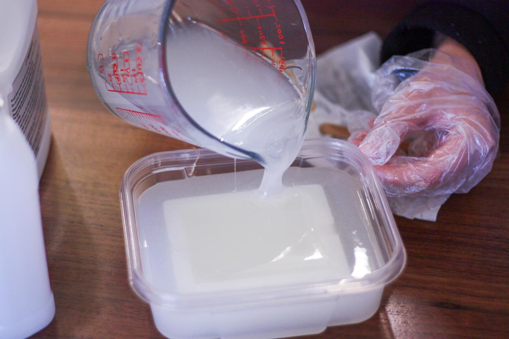
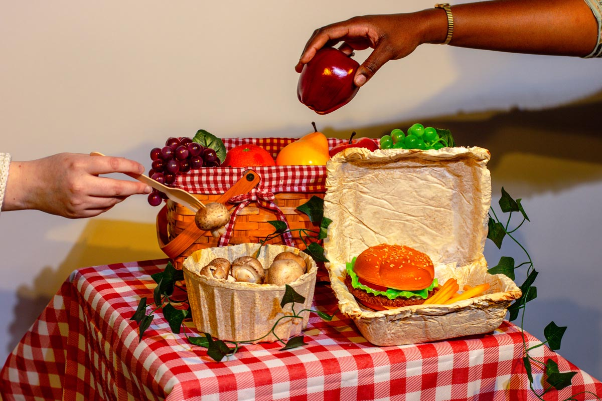
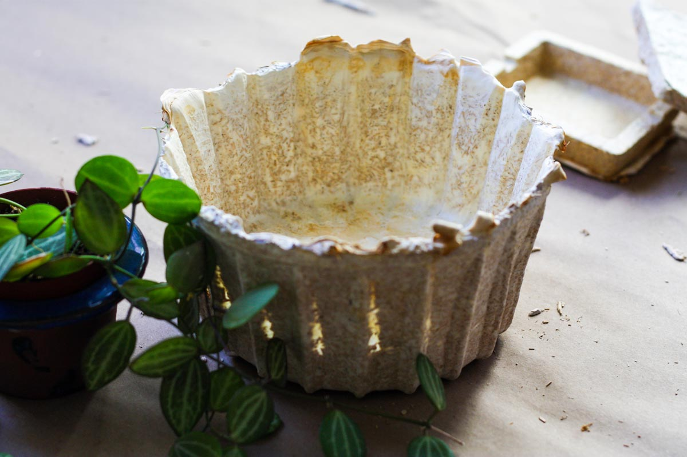
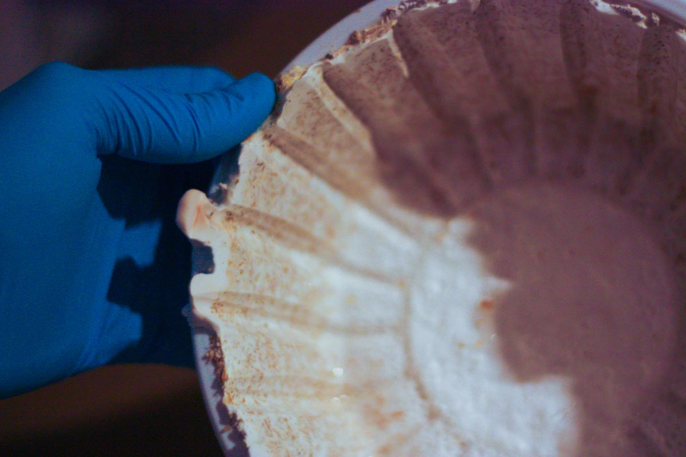
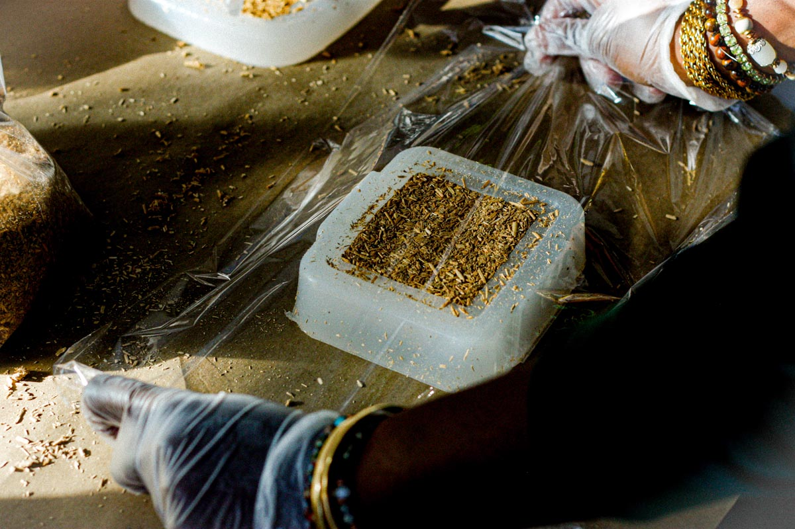
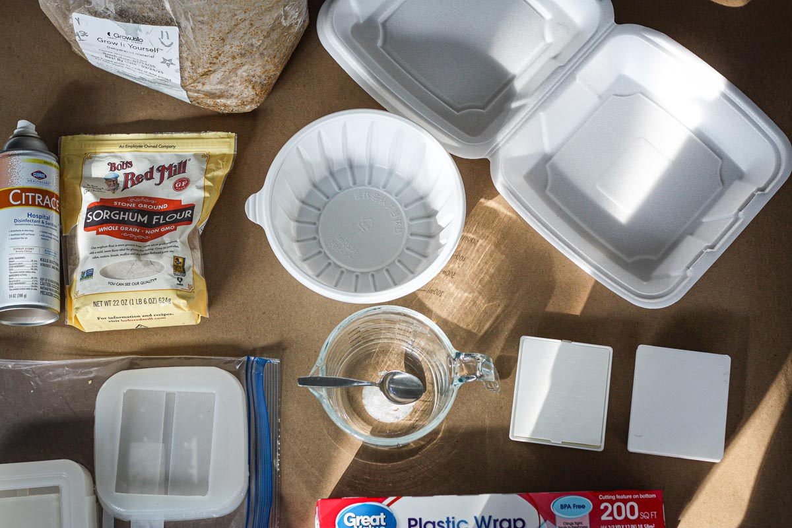
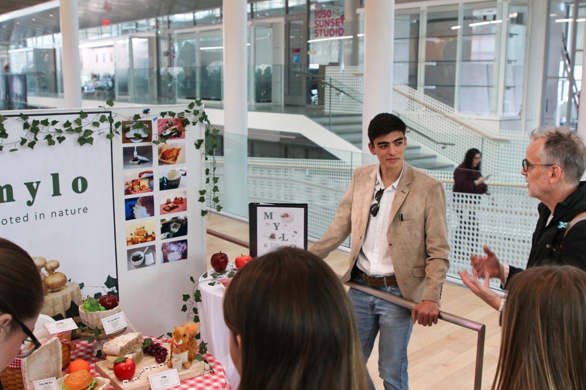

Mylo To-Go
Project Overview
In a world drowning in plastic waste, we turned to nature for a solution. Our mycelium-based containers aren't just biodegradable; they're grown, not manufactured. Designed to replace single-use Styrofoam, our containers decompose naturally, leaving no trace.
The creation of MYLO entailed collaboration as a small team to explore the full development cycle of mycelium-based fabrication. I contributed to every step of the process: form development, mold fabrication, mycelium cultivation, visual documentation, and iteration.
Challenge
Single-use food containers, particularly Styrofoam, create massive environmental waste that persists for centuries. Traditional biodegradable alternatives often require industrial composting facilities and still take months to break down. How can we create a truly sustainable, rapidly biodegradable container that decomposes naturally?
Solution
Mylo To-Go reimagines food containers by growing them from mycelium, the root structure of mushrooms. These containers are cultivated rather than manufactured, using agricultural waste as substrate. The result is a fully biodegradable container that returns to nature in weeks, not centuries, while providing effective insulation and protection for food.
Key Features
- Grown from mycelium using agricultural waste as substrate
- Fully biodegradable and compostable in natural environments
- Replaces single-use Styrofoam and plastic containers
- Provides natural insulation for food temperature retention
- Decomposes naturally in weeks, leaving no trace
- Cultivated through sustainable, low-energy process
- Explored full development cycle from mold fabrication to final product







Project Team
This project was developed through collaborative research and experimentation:
- Annabelle Pinto
- Ethan Anderson
- Em Huang
- Sydney Staemmer
- Zimuzo Ugwuanyi
- Malaina Ummel
Outcomes & Impact
Mylo To-Go demonstrates the potential of biomaterials to replace environmentally harmful single-use products. By exploring the complete fabrication cycle—from form development and mold creation to mycelium cultivation and testing—the project reveals how biological processes can create functional, sustainable alternatives to conventional manufacturing.
The containers successfully replace Styrofoam packaging while offering comparable insulation properties and superior environmental performance. Unlike traditional disposable containers that persist in landfills for centuries, Mylo containers decompose naturally in weeks, returning nutrients to the soil. This project illustrates how design can work with natural systems rather than against them, creating products that are truly circular by nature.